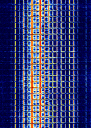
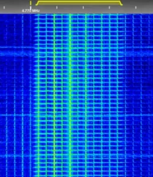

Click here to go back to the main page.
| Name: |
The Alarm Callsigns: Kroket21 (DMT Callsign) |
|---|---|
| Frequencies | 4770 |
| Status | Inactive |
| Voice | DMT |
| Mode | USB |
| Location | Smolensk, Russia |
| Known counterpart stations | The Goose |
| Description |
"The Alarm" is a Russian military commandment network serving the Western Military District. It broadcasts on 4770 kHz around the clock. So far, apart from test counts, it has not been heard with any actual traffic. The Alarm began operation on May 16, 2019. The Goose, which is located in the same physical area, had transmitted on 4770 kHz on May 14 & 15. During the first week of operation, The Alarm had repeatedly alternated between 4770 kHz and 3310 kHz at various times of day, before settling on 4770 kHz only. Its channel marker was offline from early May 2020 to June 27, 2020. Since 2025 The Alarm has been shutdown and is still today inactive. |
| Media |
Waterfall image: 
Second waterfall image:  Audio sample: |